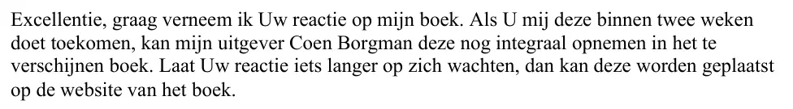

Prueba · Carta
Giltay a la ministra de Defensa, 10 de marzo de 2014
El pasaje
«Excelencia, me gustaría conocer su respuesta a mi libro. Si me la hace llegar en el plazo de dos semanas, mi editor, Coen Borgman, todavía podrá incluirla íntegramente en el libro de próxima aparición. Si su respuesta se hace esperar algo más, podrá publicarse en el sitio web del libro». Página 1, tercer párrafo de la carta. Traducido del neerlandés; el texto original figura a continuación.
Texto original
“Excellentie, graag verneem ik Uw reactie op mijn boek. Als U mij deze binnen twee weken doet toekomen, kan mijn uitgever Coen Borgman deze nog integraal opnemen in het te verschijnen boek. Laat Uw reactie iets langer op zich wachten, dan kan deze worden geplaatst op de website van het boek.”

Por qué importa este documento
Con esta carta, entregada en mano en el ministerio el 10 de marzo de 2014, la ministra de Defensa recibió el manuscrito de El general del encubrimiento, con la solicitud de una respuesta. Si esta llegaba en el plazo de dos semanas, aún podría incluirse en el libro. La segunda página es el acuse de recibo, firmado ese mismo día. El ensayo sostiene que en marzo de 2014 los ministros de Defensa y del Interior recibieron el manuscrito completo antes de la publicación, con una notificación formal y un plazo para responder. Que el manuscrito se enviara a ambos ministros con una solicitud de respuesta consta desde 2016 como hecho no controvertido en la sentencia de apelación.
Procedencia
- Documento
- Carta con acuse de recibo, dos páginas
- Remitente
- Edwin Giltay, periodista, La Haya
- Destinataria
- La ministra de Defensa, Plein 4, 2511 CR Den Haag (La Haya)
- Fecha
- La Haya, 10 de marzo de 2014
- Entrega
- Con el encabezamiento «in persoon afgegeven tegen bewijs van ontvangst» (entregado en mano contra acuse de recibo); la página 2 es el acuse de recibo del 10 de marzo de 2014, firmado a mano en nombre del Ministerio de Defensa
- Asunto
- El manuscrito de El general del encubrimiento, entregado antes de su publicación, con la solicitud de una respuesta, que podrá incluirse en el libro si llega en el plazo de dos semanas
- Anexo
- Manuscrito de El general del encubrimiento; la carta remite al resumen de la página 172
- Idioma
- Neerlandés
- Conservado por
- Archivo del autor
- Véase también
- Giltay al ministro del Interior, 18 de marzo de 2014Tribunal de Apelación de La Haya, sentencia del 12 de abril de 2016 (ECLI:NL:GHDHA:2016:870)
Citado en: el ensayo «La prohibición cayó, el libro quedó en pie» en el capítulo (7) «Ninguna respuesta sobre el fondo» y en la diapositiva «Ministerio del Interior · 2014–2015» de la presentación «La historia en el mapa».
Ficha de prueba: https://
Documento: https://
Modificado por última vez el 13 de septiembre de 2026, consultado el 26 de noviembre de 2026.

Esta página es una ficha de prueba del libro El general del encubrimiento de Edwin Giltay y del sitio web que lo acompaña.